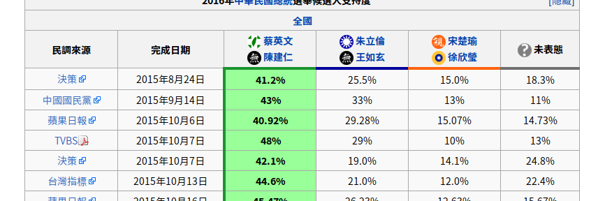

# For arch linux
pacman -Syu
pacman -S python python-pip
pacman -S python-numpy python-matplotlib
# For Mac
brew upgrade
brew install python3
brew install numpy --with-python3
brew install matplotlib --with-python3
# For arch linux
pacman -S ipython jupyter
# For Mac
pip3 install ipython jupyter
import numpy as np
A = np.array([1, 2, 3])
A * 2 # array([2, 4, 6])
B = np.array([[1, 0], [0, 1], [0, 0]])
A @ B
# array([1, 2])
# same as A.dot(B)
import numpy as np
import matplotlib.pyplot as plt
A = np.arange(0, 20)
B = A ** 2
plt.plot(A, B)
plt.show()
Wiki 上有民調結果，可否抓下來分析？
Need to parse html
<tr>
<td>
<a rel="nofollow" class="external text"
href="...">台灣指標</a>
</td>
<td> 2015年9月12日 </td>
<td style="...">
<b>43.6%</b>
</td>
<td style="..."> 15.3% </td>
<td> 14.7% </td>
<td> 26.5% </td>
</tr>
# For arch linux
pacman -S python-beautifulsoup4
# For Mac
pip3 install beautifulsoup4
Use urllib
import urllib
with urllib.request.urlopen(url) as response:
html = response.read().decode('utf8')
Documents is at here
from bs4 import BeautifulSoup
soup = BeautifulSoup(html, 'html.parser')
tables = soup.find_all('table')
obj.text to get the
text of a html object. obj.children to get the
children of a html object. str.startswith(...)
to judge if a string start with a string.
Use datetime to parse string to date object.
from datetime import datetime
date = datetime.strptime(s, '%Y年%m月%d日').date()
import matplotlib.pyplot as plt
plt.plot(X, Y)
plt.show()
There are many libraries that provide convenient socket io functions.
We choose asyncio for asynchronous execution
There are some good examples in the documents
asyncio.get_event_loop to get the
event loop. asyncio.create_task(...)
to create a asynchronous task.
try:
...
except KeyboardInterrupt:
...
asyncio.Queue to create
an asynchronous queue.
queue = asyncio.Queue
queue.get(...) # Coroutine
queue.put_nowait(...) # Blocking function